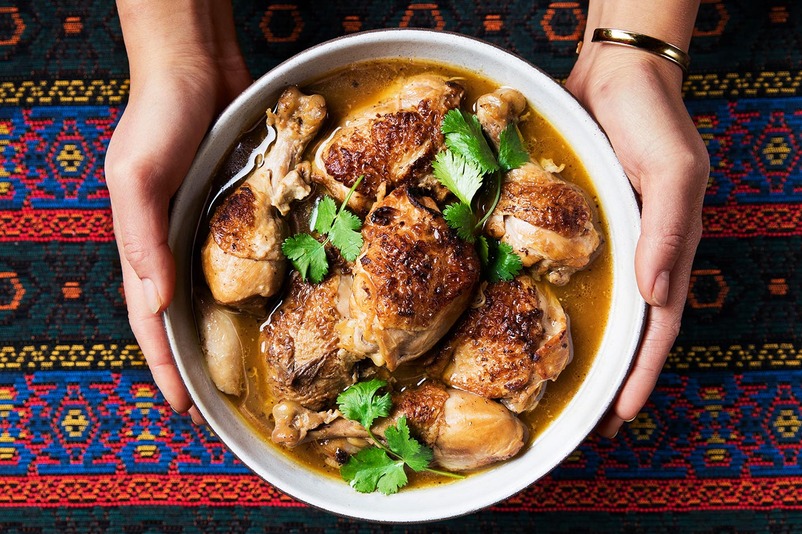

Country Origin of the food: Philippines
History of the food: Filipino adobo has a history that dates back well before the presence of Spaniards in the country.
The history of marinating meat in vinegar and salt was first introduced to the country by the Malay settlers as a means of food preservation. Locally, coconut vinegar and palm vinegar were used as well as clay pots to cook and stew.
Ingredients of the food:Chicken Leg,Garlic,Black Peppercorn,Distilled Vinegar,Soy Sauce,WaterVegetable Oil
How to cook the food:
Step1
Combine chicken, garlic, peppercorn, vinegar, MAGGI® Oyster Sauce, soy sauce and water in a pot. Simmer for 15 minutes.
Step2
Heat oil in a separate pan, strain chicken and sauté until golden brown.
Step3
Pour cooking liquid and simmer for 5 minutes. Transfer into a serving plate and serve.